Eventos
Mais de 26 anos criando experiências memoráveis.

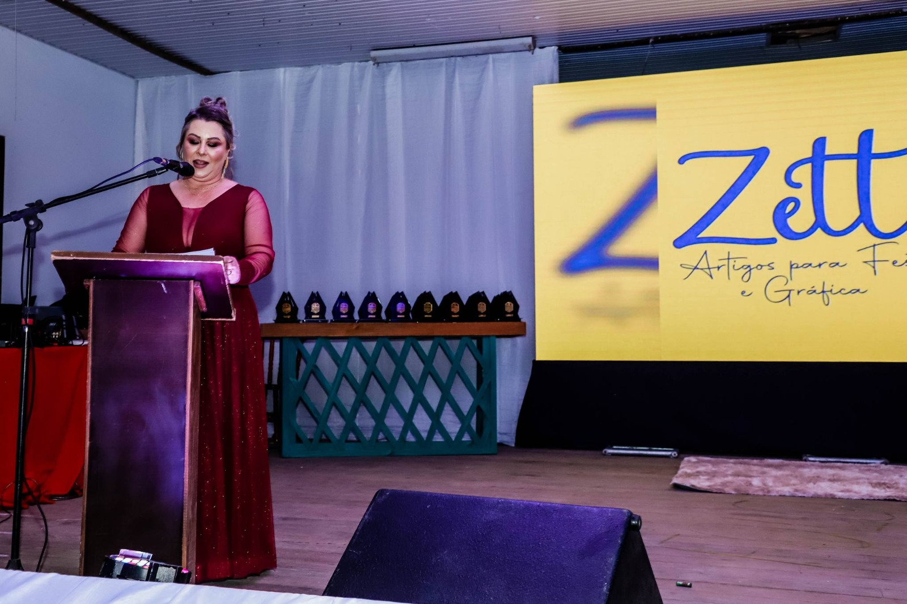
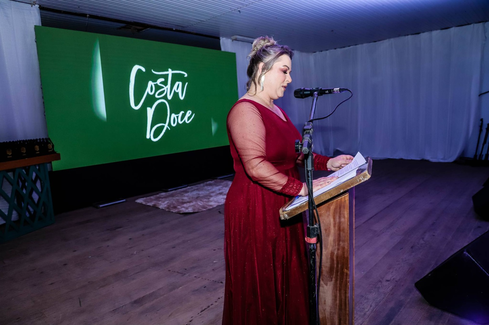
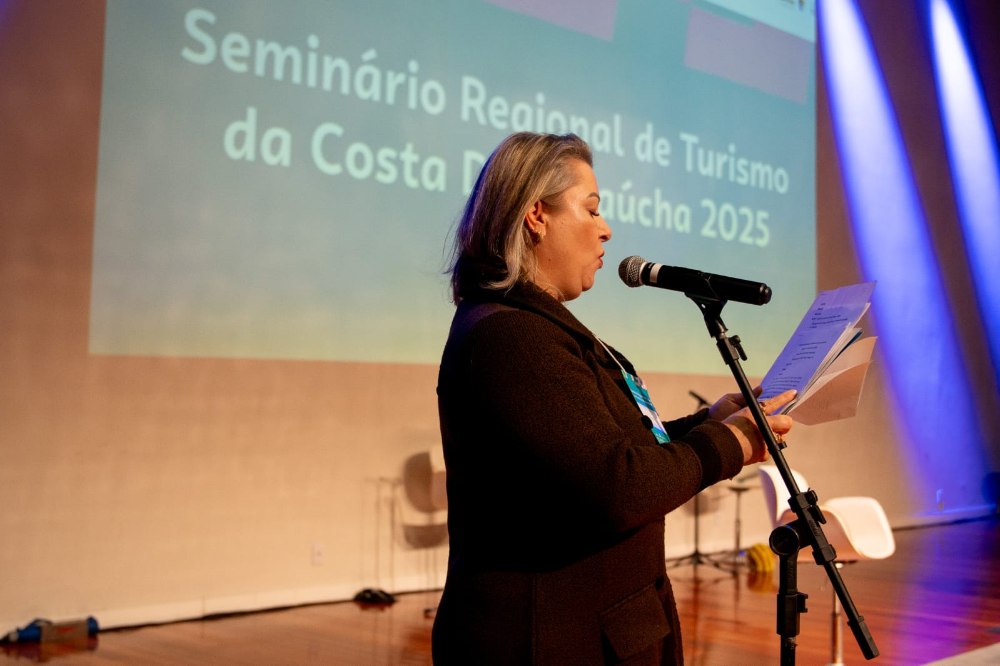
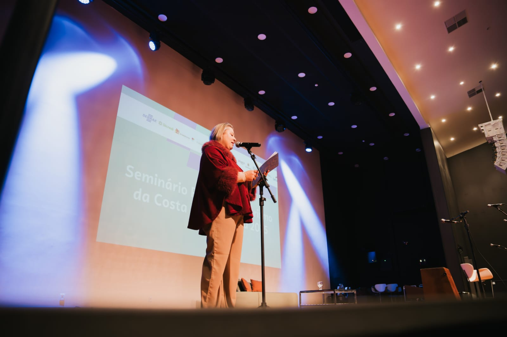
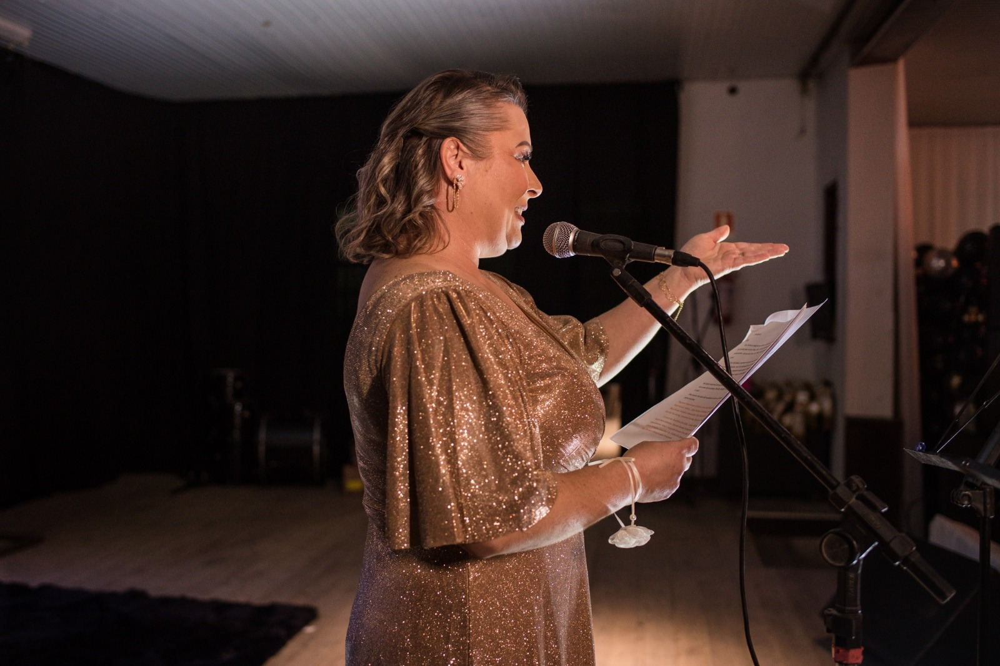
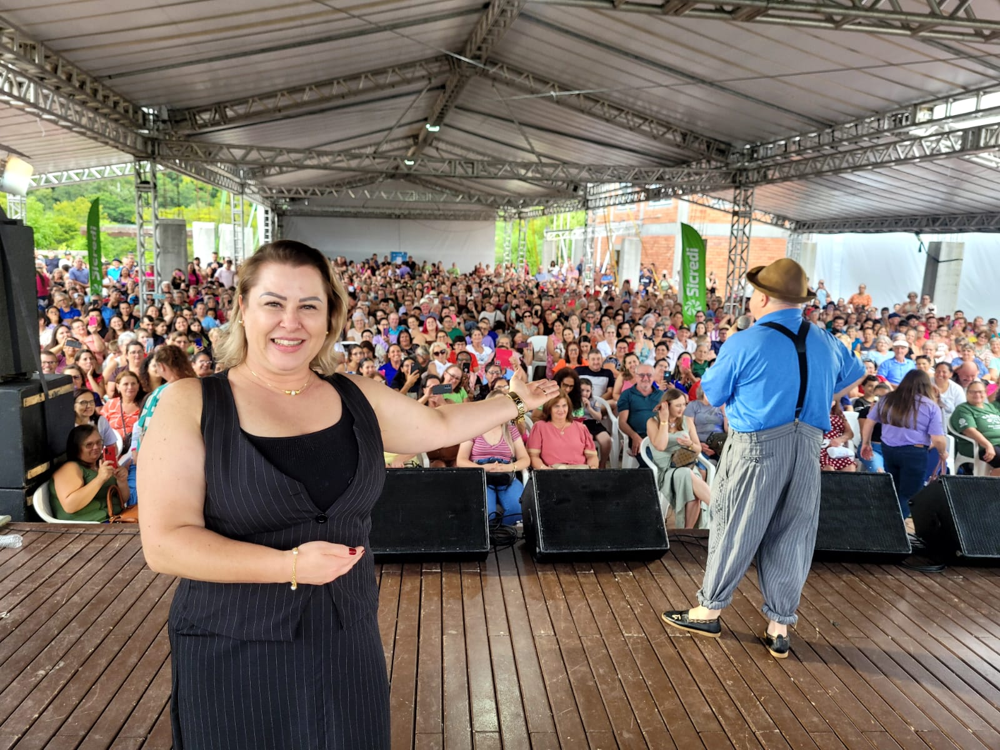
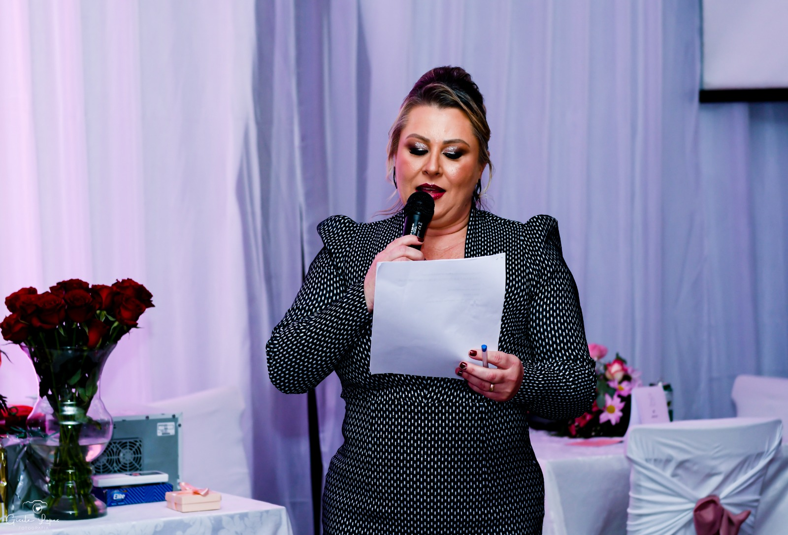
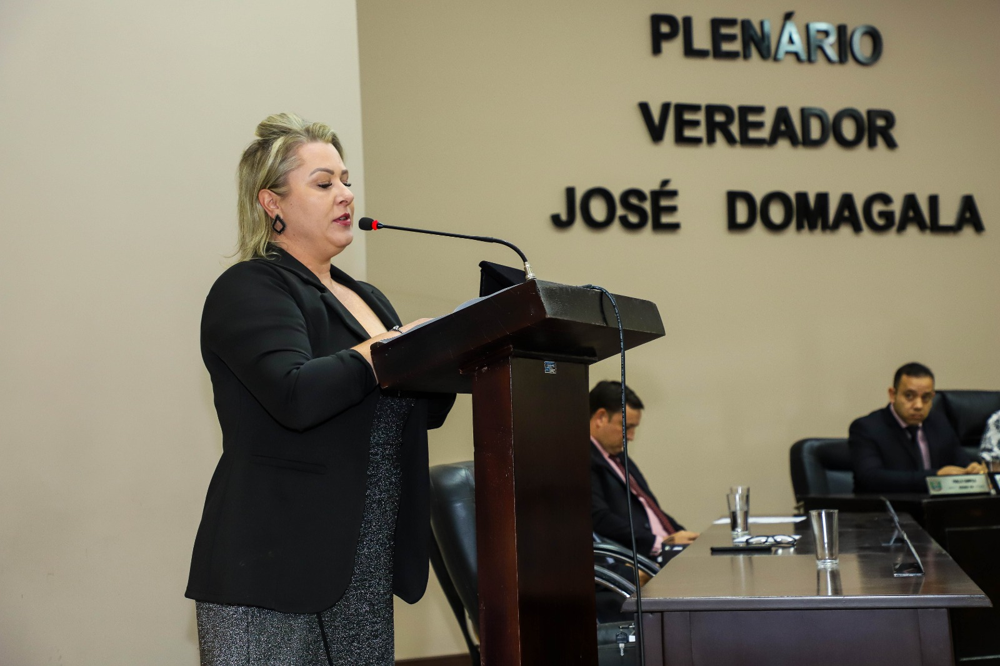
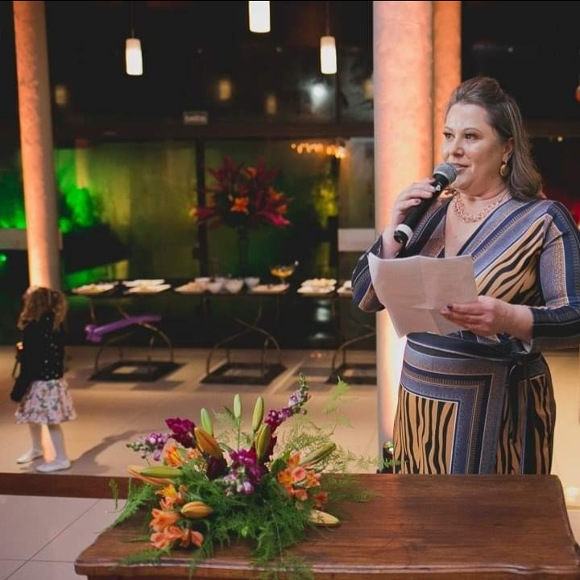
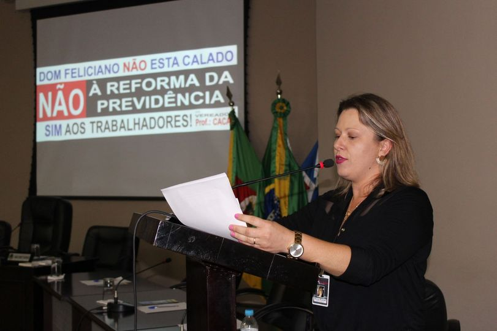
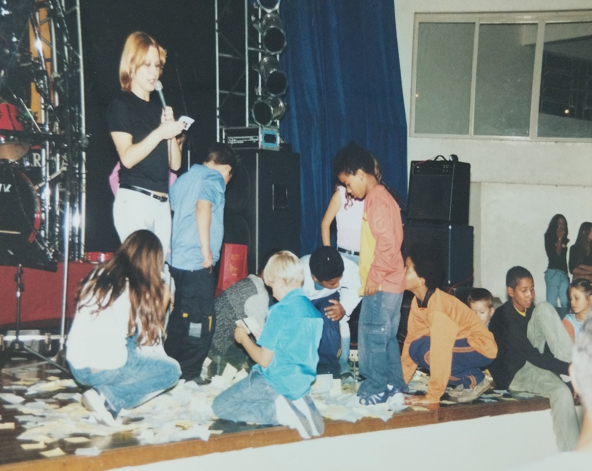
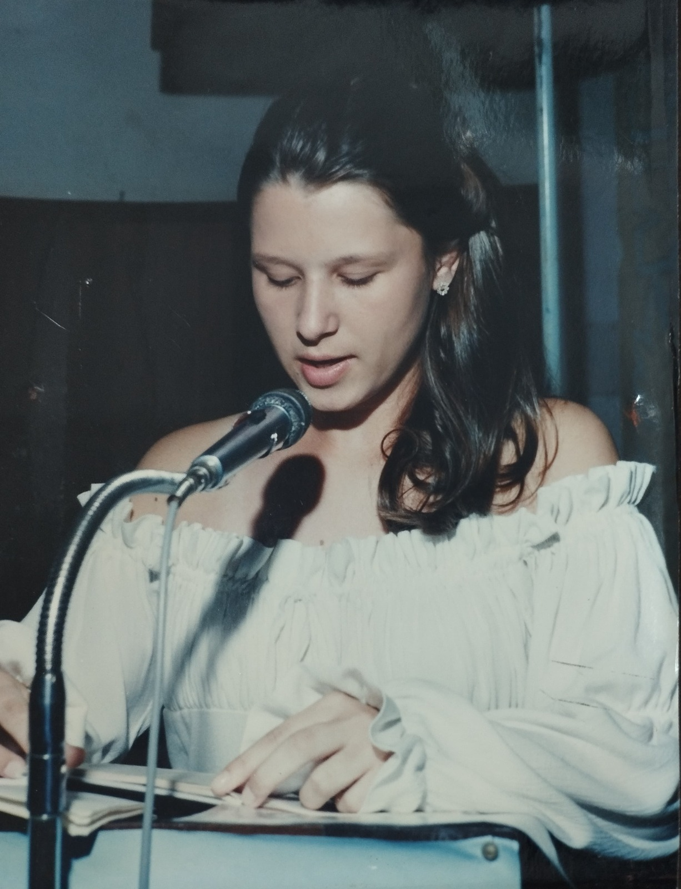
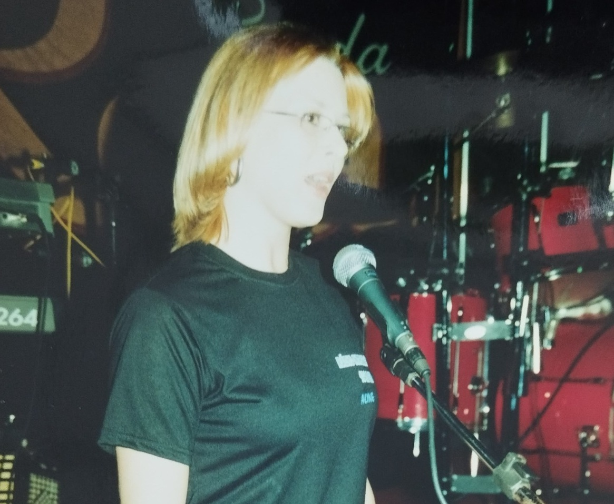
Sou Aline Rosiak, Mestre de Cerimônias e especialista em comunicação, dedicada a conduzir eventos com elegância, presença e excelência. Com mais de 26 anos de experiência e milhares de eventos apresentados, desenvolvi uma atuação marcada pela segurança, fluidez e conexão com o público. Acredito que cada evento carrega uma mensagem, uma intenção e uma experiência que precisa ser vivida de forma clara, envolvente e memorável. Com uma comunicação estratégica e sensível, atuo na conexão entre pessoas, momentos e propósitos, garantindo organização, naturalidade e impacto em cada detalhe. Além da atuação em eventos, também contribuo para a formação de novos Mestres de Cerimônias e para o desenvolvimento da comunicação de profissionais que desejam se posicionar com mais segurança, presença e autoridade.
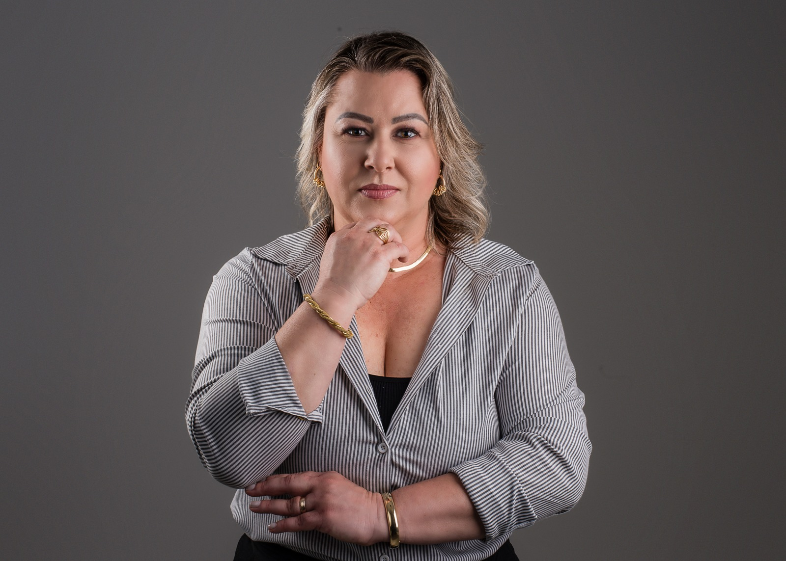
Condução profissional de eventos, presença e comunicação estratégica.
Com mais de 26 anos de experiência e milhares de eventos apresentados, atuo na condução de eventos corporativos, institucionais e sociais, garantindo fluidez, organização e conexão com o público.
Cada detalhe é conduzido com atenção, alinhamento e sensibilidade, garantindo que o evento ocorra de forma natural, segura e apropriada.
Indicado para:
Formação para quem deseja atuar como Mestre de Cerimônias com profissionalismo, destaque e excelência.
A Academia de Mestres é um espaço de desenvolvimento voltado para a formação completa de profissionais que desejam se posicionar com segurança, técnica e presença no palco.
Mais do que ensinar a apresentar, o foco está na construção de uma comunicação estratégica, alinhada ao mercado e às exigências reais dos eventos.
Você vai desenvolver:
Conteúdos que desenvolvem comunicação, posicionamento e impacto.
Minhas palestras são para empresas, equipes e profissionais que desejam aprimorar sua comunicação, fortalecer sua presença e se posicionar com mais clareza e autoridade.
Com abordagem prática e envolvente, levo reflexões e ferramentas que podem ser aplicadas no dia a dia.
Temas abordados:
Mais de 26 anos criando experiências memoráveis.












